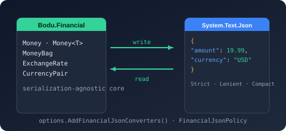

Bodu.Financial.Serialization.Json Namespace
- Package

Bodu.Financial.Serialization.Json
Purpose
Bodu.Financial.Serialization.Json carries the System.Text.Json integration for Bodu.Financial. It supplies the six converters that round-trip Money, Money<TCurrency>, CalculatedMoney, MoneyBag, ExchangeRate, and CurrencyPair to and from JSON, together with a one-call extension that registers them under a chosen policy and a dependency-injection registration for containers.
The core Bodu.Financial library is serialization-agnostic - its monetary types carry no [JsonConverter] attribute. Add this package and call AddFinancialJsonConverters to opt into JSON support and select a wire policy across a whole JsonSerializerOptions instance.
Static documentation
- Introduction - the six converters, the policy model, and the scenario index.
- Core concepts - canonical object shape, compact form, scale, verbatim
CalculatedMoney, the rate and pair shapes, keyed options, failure modes. - Getting started - install + minimal samples for each policy, each converter, and the DI registration.
- Financial JSON serialization guide - every converter's wire shape under every policy, scale handling, DI, and migration notes.
- Bodu.Financial introduction - how the converters fit into the broader monetary surface.
- Bodu.Financial getting started - the JSON section shows how to register the policy.
Key types
- FinancialJsonSerializerOptionsExtensions -
AddFinancialJsonConverters(JsonSerializerOptions, FinancialJsonPolicy)registers the converter set on an options instance and returns it for chaining. - FinancialJsonPolicy - selects the wire shape (
Strict,Lenient,Compact). - MoneyOfTCurrencyJsonConverter<TCurrency>, MoneyOfTCurrencyJsonConverterFactory - converter and factory for Money<TCurrency>.
- MoneyJsonConverter - converter for Money.
- CalculatedMoneyJsonConverter - converter for CalculatedMoney; writes the unrounded
decimalverbatim (trailing zeros included) so a high-precision unit price survives the round trip. - MoneyBagJsonConverter - converter for MoneyBag.
- ExchangeRateJsonConverter, CurrencyPairJsonConverter - converters for the FX value objects.
- FinancialJsonServiceCollectionExtensions - the dependency-injection registration
AddFinancialJson(services, policy), a keyedJsonSerializerOptionssingleton underJsonOptionsKey("Financial").
Wire shapes
| Policy | Money<TCurrency> / Money |
MoneyBag |
Use when |
|---|---|---|---|
Strict (default) |
{ "amount": 19.99, "currency": "USD" } |
{ "balances": { "USD": 100.00, "EUR": 50.00 } } |
Storing canonical ledger payloads. Validates currency match, rejects duplicate keys. |
Lenient |
Same as Strict | Same as Strict | Importing third-party data. Normalises lowercase ISO codes, trims whitespace before validation. |
Compact |
"19.99 USD" |
{ "USD": 100.00, "EUR": 50.00 } |
Log lines, API payloads where verbosity matters. Accepts either "19.99 USD" or "USD 19.99" on read. |
Example
using System.Text.Json;
using Bodu.Financial;
using Bodu.Financial.Currencies;
using Bodu.Financial.Serialization.Json;
// Registration is required - the core types carry no [JsonConverter] attribute.
var strict = new JsonSerializerOptions().AddFinancialJsonConverters();
string ledger = JsonSerializer.Serialize(new Money<USD>(19.99m), strict);
// { "amount": 19.99, "currency": "USD" }
// Compact for log lines.
var options = new JsonSerializerOptions()
.AddFinancialJsonConverters(FinancialJsonPolicy.Compact);
string compact = JsonSerializer.Serialize(new Money<USD>(19.99m), options);
// "19.99 USD"
// Lenient for ingest workflows.
var lenient = new JsonSerializerOptions()
.AddFinancialJsonConverters(FinancialJsonPolicy.Lenient);
Money<USD> imported = JsonSerializer.Deserialize<Money<USD>>(
"{ \"amount\": 19.99, \"currency\": \"usd\" }", lenient)!;
Notes
- Registration is required. The core monetary types carry no
[JsonConverter]attribute, so JSON support is opt-in: callAddFinancialJsonConverters(or add converters toJsonSerializerOptions.Converters) before serializing. Without registration,JsonSerializersilently falls back to reflection-shaped output rather than throwing. - Currency-mismatch on
Money<TCurrency>. Strict and Lenient policies both reject payloads whose"currency"field does not matchTCurrency.IsoCode- drift surfaces asJsonExceptionrather than a silently re-interpreted amount.Moneyaccepts any ISO code and rounds to the registry'sMinorUnitsfor that code. - MoneyBag pruning. Zero balances are pruned on round-trip - the deserialised bag matches the canonical form, not the verbatim wire shape.
- Strict vs. Lenient on Compact. The compact policy accepts both
"19.99 USD"and"USD 19.99"regardless ofStrict/Lenientbecause there is no ambiguity to be strict about; lenient and strict behave identically underCompact. - AddFinancialJsonConverters. Registers every converter on the same
JsonSerializerOptionsinstance under a single policy. Call this once per options instance; mixing policies across types is not supported. - See also: the
Bodu.Financialreference, theMoney<TCurrency>guide.
Classes
- CalculatedMoneyJsonConverter
Converts a CalculatedMoney to and from JSON using the policy supplied at construction. Because CalculatedMoney is the unrounded, deferred-arithmetic tier, its full decimal precision - including trailing zeros - is written verbatim and read back unchanged, so a high-precision unit price survives a round-trip without settling to the currency's minor units.
- CurrencyPairJsonConverter
Converts an CurrencyPair to and from JSON using the policy supplied at construction.
- ExchangeRateJsonConverter
Converts an ExchangeRate observation to and from JSON using the policy supplied at construction.
- FinancialJsonSerializerOptionsExtensions
Extension methods that register the Bodu.Financial JSON converters on a JsonSerializerOptions, picking a coherent shape for every shipped monetary type from a single FinancialJsonPolicy value.
- FinancialJsonServiceCollectionExtensions
Provides the dependency-injection registration surface for the financial JsonSerializerOptions.
- MoneyBagJsonConverter
Converts a MoneyBag to and from JSON using the policy supplied at construction.
- MoneyJsonConverter
Converts a Money to and from JSON using the policy supplied at construction. Mirrors the shape vocabulary of MoneyOfTCurrencyJsonConverter<TCurrency> so a single FinancialJsonPolicy selection produces a coherent on-the-wire format across the monetary types.
- MoneyOfTCurrencyJsonConverterFactory
Creates MoneyOfTCurrencyJsonConverter<TCurrency> instances for closed Money<TCurrency> types, applying a configurable FinancialJsonPolicy to every closed converter the factory produces.
- MoneyOfTCurrencyJsonConverter<TCurrency>
Converts a Money<TCurrency> to and from JSON using the policy supplied at construction.
Enums
- FinancialJsonPolicy
Selects the JSON serialization shape and parsing strictness applied by the Bodu.Financial JSON converters.